1 Manual de usuario
1.1 Creación de nueva tarea
La creación de una nueva tarea se hace desde el menú de la columna “Pendiente”. Se debe hacer click en el botón ... y escoger el item “Nueva tarea”.
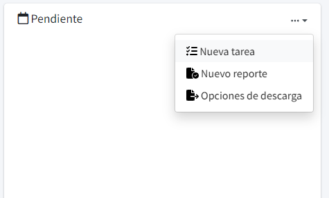
Nos aparecerá una ventana en la que podemos llenar información de la tarea. A continuación se explica el contenido de cada campo.
1.1.1 Título de tarea
El título de tarea es la información principal a visualizar. Brinda una idea general de la tarea que se busca completar. Al redactar el título debe buscarse mantenerlo corto pero lo suficientemente claro para no confundirlo con otras tareas.
Puede tener como máximo 250 caracteres.
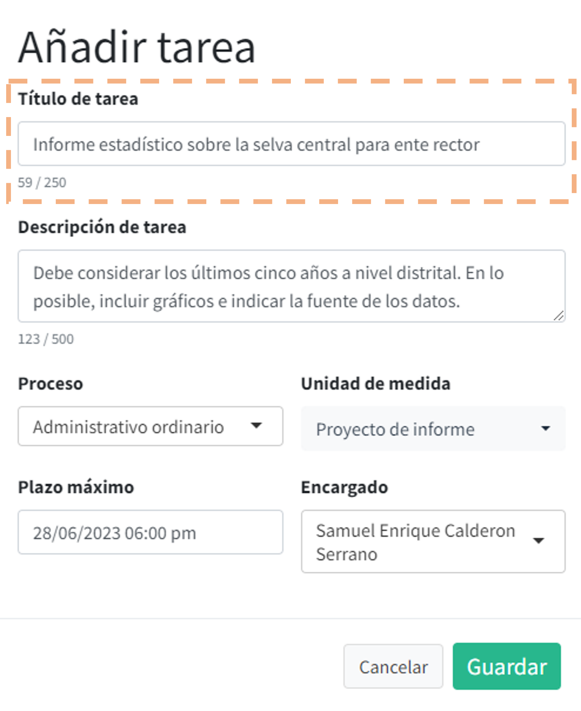
1.1.2 Descripción de tarea
La descripción de tarea brinda mayor detalle acerca del contenido, metodología o fuentes a utilizar para completar la tarea. Dentro de este campo es posible explayarse para brindar mayor especificidad a la tarea.
Puede tener como máximo 500 caracteres.
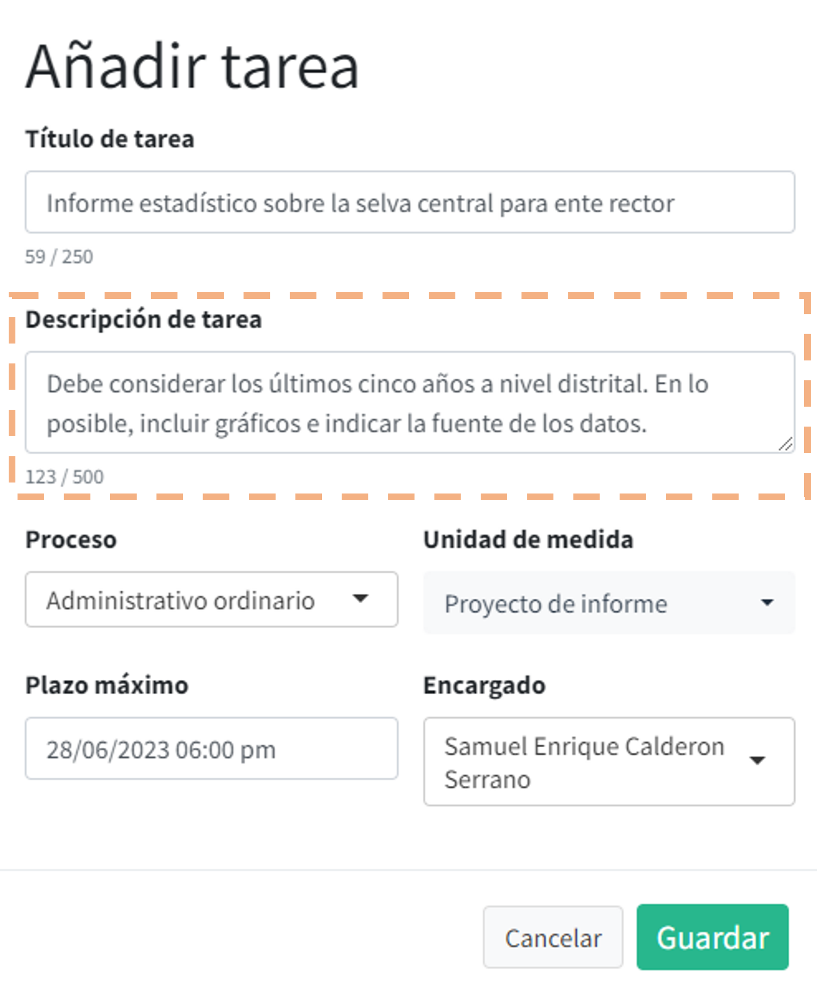
1.2 Proceso
Es un conjunto de actividades llevadas a cabo para alcanzar algún fin en particular. En el contexto de la gestión de tareas, sirve para agrupar distintas unidades de medida que aportan en un fin común o una tarea mayor, vinculada a algún producto de la unidad funcional.
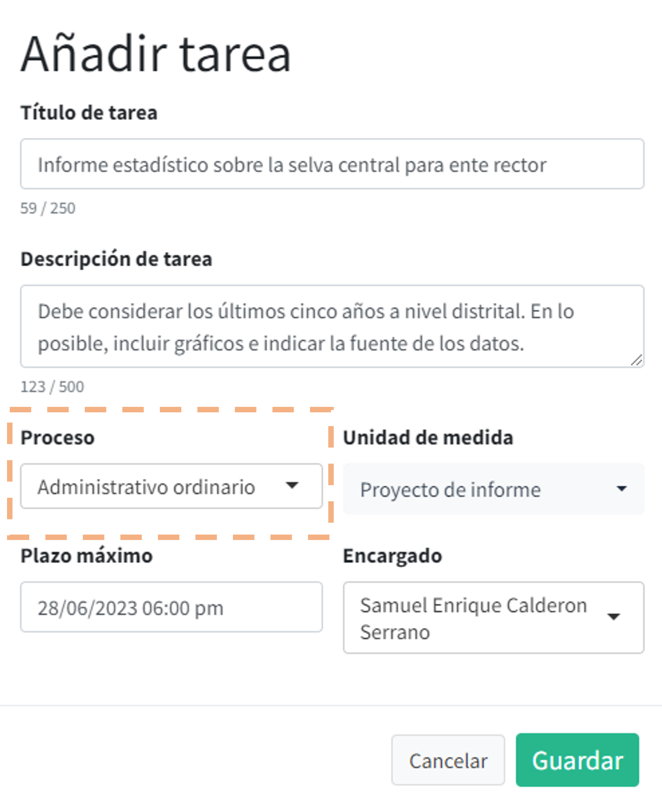
1.2.1 Unidad de medida
Es el producto o evidencia medible de que la tarea se ha completado. Cuando la tarea se marque como terminada, aumentará una unidad en el contador de producción para la unidad de medida escogida.
Por defecto, se espera que las tareas produzcan un informe. Sin embargo, las opciones de unidad de medida disponibles deben ser personalizadas de acuerdo al trabajo que se realiza en el equipo.
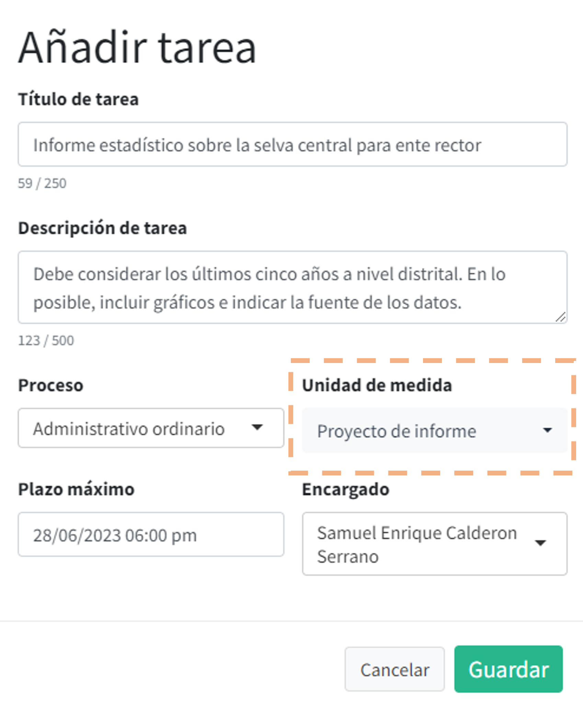
1.2.2 Plazo máximo
Establece una fecha y hora límites para el cumplimiento de la tarea. Respecto a la hora límite, es posible escogerla en el rango de las 8:00 hasta las 18:45. Por defecto, el sistema establece el día siguiente a la fecha de creación de la tarea.
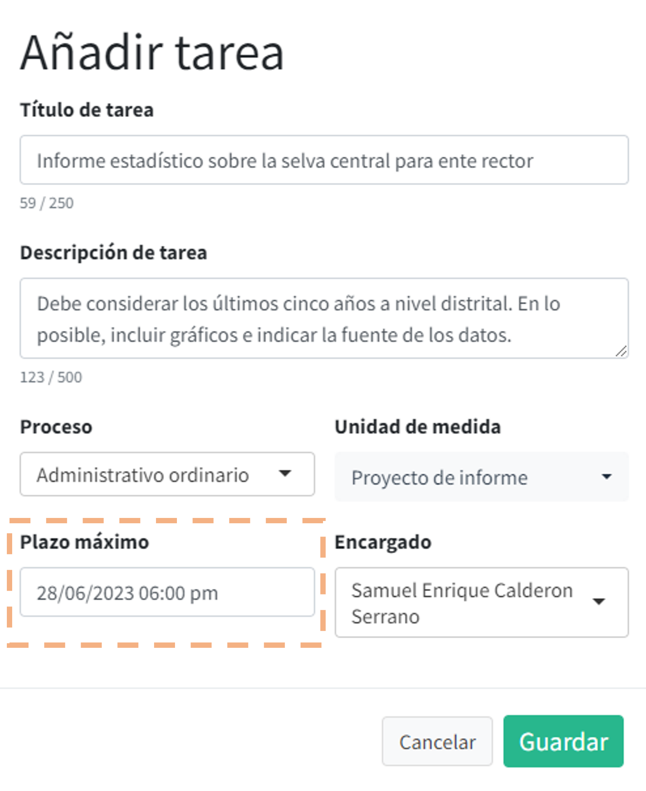
1.2.3 Encargado
Indica el nombre de la persona responsable del cumplimiento de la tarea. Un usuario básico solo puede escoger su nombre, pero un usuario responsable de equipo puede asignarle tareas a otras personas dentro de su equipo.
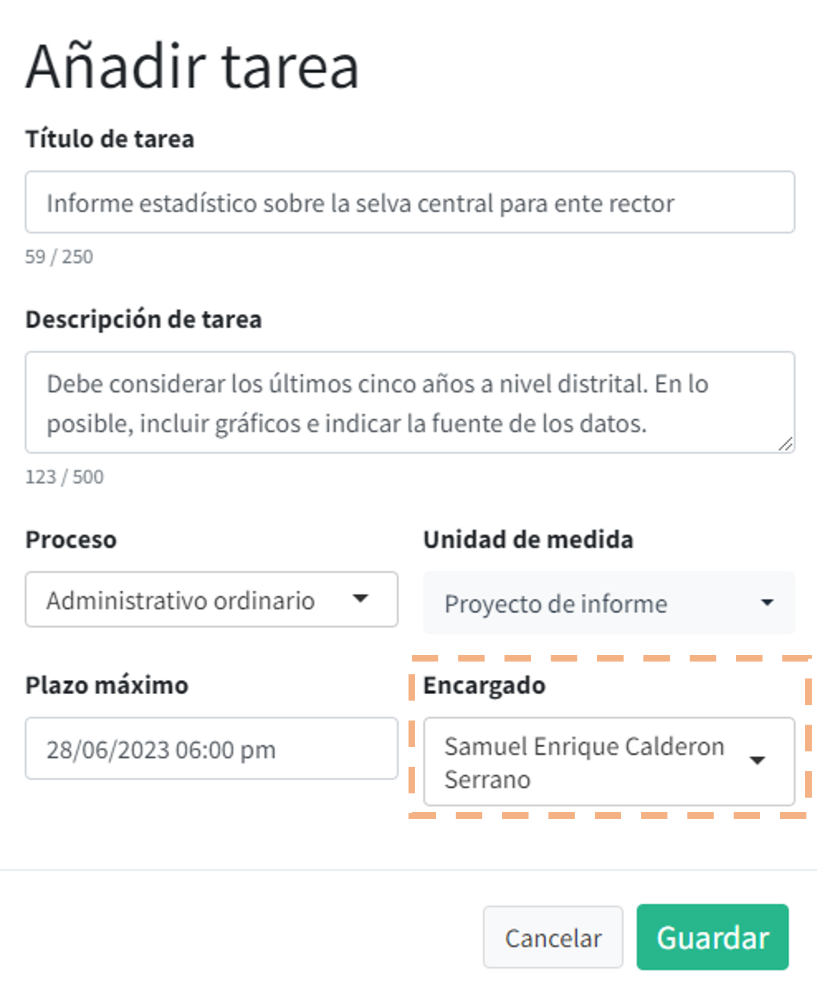
1.3 Gestión de progreso de tareas
Cada tarea asignada es convertida en una tarjeta dentro de la plataforma.
1.3.1 Tarjeta de tarea
Al iniciar la aplicación, todas las tarjetas inician en un estado cerrado, en la que solo es posible ver el título de la tarea y su fecha límite. Todas las tareas recién creadas aparecen en la columna de “Pendientes”.
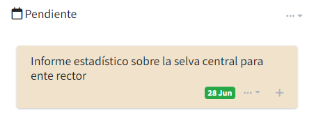
El color de la etiqueta en la que aparece la fecha límite variará según qué tan cerca se esté de ella al momento de ver la tarjeta:
Verde: Hasta el día previo de la fecha límite
Amarillo: El día de fecha límite
Rojo: Desde un día después de la fecha límite
De esta manera se puede hacer un seguimiento rápido a las tareas que sean más urgentes.
Al hacer click en el botón + la tarjeta mostrará información extra de la tarea.
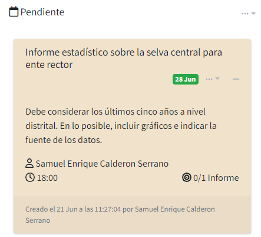
La información extra incluye la descripción, el nombre de la persona responsable, la hora límite y la unidad de medida establecida.La parte inferior de la tarjeta muestra la fecha y hora de creación, así como la persona que asignó la tarea.
Al presionar sobre el símbolo de menú (…) se obtienen opciones de acción para la gestión de la tarea.
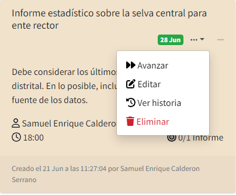
1.3.2 Avanzar
Permite avanzar en el ciclo de vida de la tarea. Inicialmente la tarea tiene un estado “Pendiente”, pero con esta opción podemos registrar algún tipo de progreso. Darle click en “Avanzar” abre una ventana que modifica el estado de la tarea.
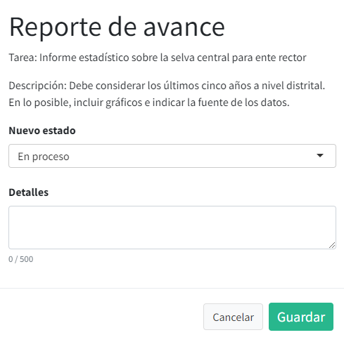
Las opciones para elegir el nuevo estado de la tarea dependerán del estado actual de la tarea. Por ejemplo, desde “Pendiente” es posible indicar que la tarea está “En proceso” o “En revisión”.
Por último, el campo “Detalles” permite brindar información extra sobre el progreso reportado, como señalar coordinaciones, revisiones o cumplimientos parciales. Si está resultando difícil completar los plazos establecidos, pueden indicarse razones en esta celda.
Una vez guardado el progreso, la tarjeta de tarea aparecerá en la columna correspondiente al nuevo estado.
1.3.3 Editar
Permite cambiar el título o descripción de la tarea. Utilizarlo en caso de que la redacción de alguno de ellos ya no resulte satisfactoria o sea necesario actualizar la fecha límite de entrega.
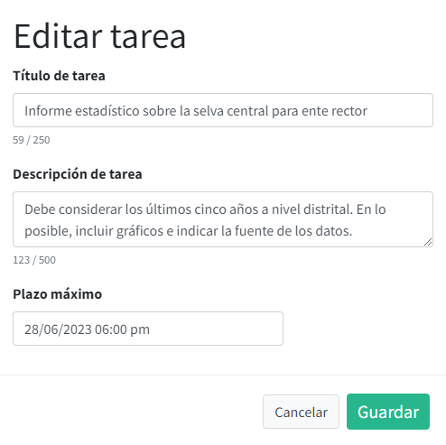
Cada edición genera una entrada en el historial de la tarea.
1.3.4 Ver historia
Permite ver todos los reportes de progreso reportados en esta tarea o sus ediciones. Indica la fecha y hora de reporte, persona que reportó, estado de la tarea y el detalle provisto.
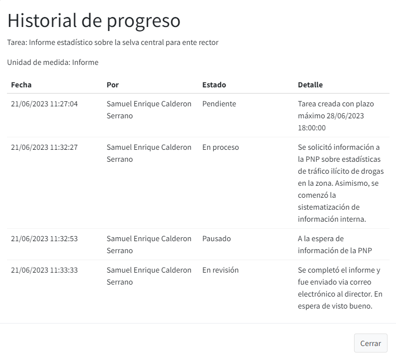
1.3.5 Eliminar
Permite eliminar la tarea seleccionada. Debe aplicarse solo en caso de errores diferentes a la redacción del título y descripción. Un cuadro de diálogo pedirá confirmación de esta acción.
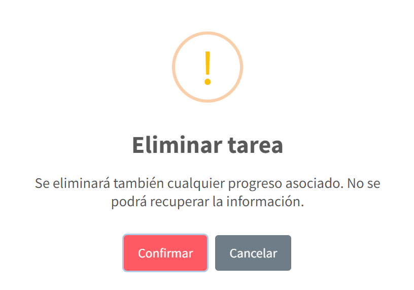